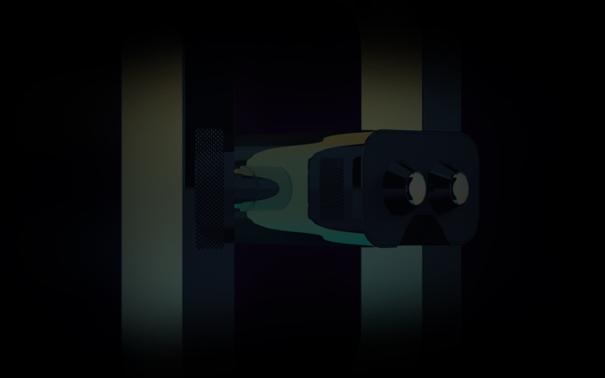
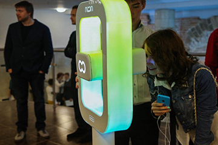
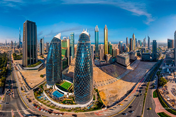
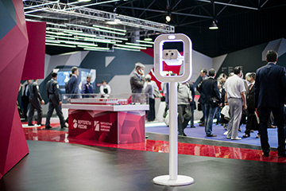

Museums
Historical reconstruction — transferring reality in time with all attributing artifacts.

In the city
High resolution virtual tours, shot from a bird`s eye view.

Exhibitions
Product presentation, visualization of future architectural objects.
